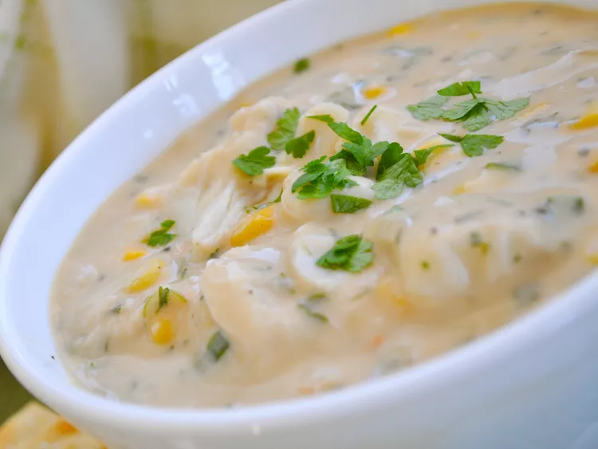

Crabmeat and Corn Soup

This crab and corn chowder is a comforting, flavorful soup that’s delicious any time of year.
Sweet corn and fresh crabmeat come together in this filling, warming chowder.
Home cooks say the silky, creamy texture gets high marks from family members.
Ingredients
- ¼ cup butter
- ¼ cup all-purpose flour
- 2 cups whole milk
- 2 cups half-and-half
- 1 ¾ cups whole kernel corn
- 1 cup chopped green onions
- 1 pound fresh crab meat
- ½ teaspoon ground white pepper
- ½ teaspoon seasoning salt
- 1 tablespoon soy sauce
- ¼ cup chopped parsley
Steps
- Melt butter in a heavy-bottomed pot; add flour and stir gently until blended, being careful not to let it brown. Gradually add milk, stirring constantly, then stir in half-and-half until smooth. Add corn and green onions; cook until tender, about a few minutes.
- Add crabmeat, pepper, salt, and soy sauce; simmer until heated through and small bubbles form around the edges—do not let boil. Adjust seasonings to taste. Garnish with chopped fresh parsley and serve hot.
Link to home page